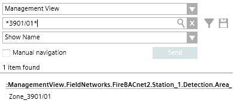

(Optional) Check Objects Identification in System Browser
This procedure does not apply to the Element ID object matching.
- You are on page 2 of 5: Select Maps, Layers and Blocks, and you completed the blocks and attributes selection (section 4 above).
- You want to check whether the selected attribute string can identify unambiguously the name or the description of the object whose graphical symbol will be imported.
- The Select blocks/attributes for [map name] dialog box is open, and you selected one of the attributes.
- In System Browser, select Management View.
- Depending on your target property, select Show Description or Show Name.
- In the search field, enter the string shown as Attribute result example and click Search
 .
. - Check that one and only one object is found, otherwise correct the attribute manipulation setting (section 4 above) and try again.
NOTE: Certain special characters, for example “.” (dot), “, “ (comma) and others, are not supported by the Name field and replaced by “_” (underscore). See the complete list here.
This is taken care of by the import tool, but not by the search in System Browser, and there you need to do it yourself. If you see any special character in the string that you search for in the Name property, then check the list of special characters and replace their occurrences with underscore. Note that the Description field does not have this restriction. - Click
 .
.
NOTE: If you fail to get an unambiguous identification of objects in System Browser due to multiple occurrences of the same object name, description or element ID, you can try to restrict the search scope for each map. To do that, do not immediately proceed to the next page, and refer to section 6 below.
